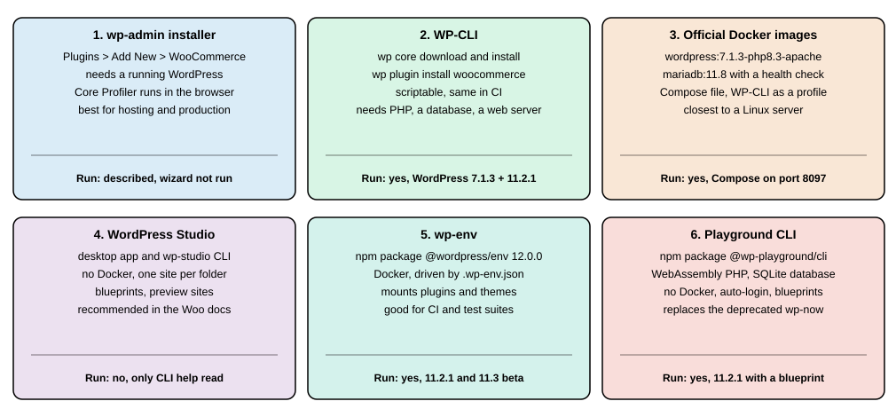
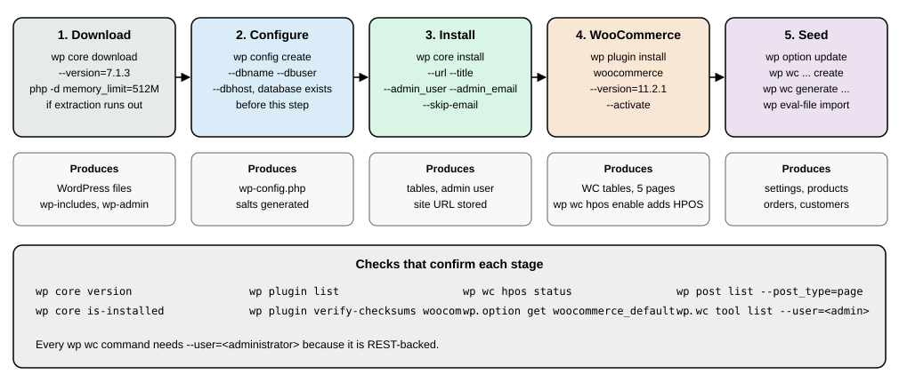
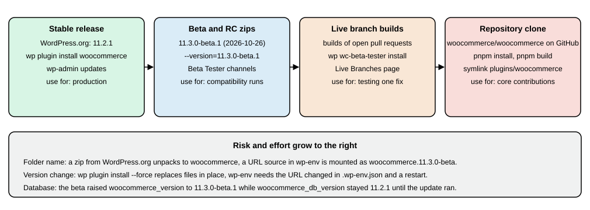

Installation and Local Environments
|
This content was generated with the assistance of AI and should be verified against the official documentation before being relied on in production. |
WooCommerce is a plugin, so installing it means installing WordPress first and then adding the plugin. This page covers
every way to do that for a shop or for development: the browser installer and the Plugins screen, WP-CLI, the official
Docker images with Compose, and the three local tools that the WooCommerce developer documentation names, WordPress
Studio, wp-env and the WordPress Playground CLI (which replaces the deprecated wp-now). It then shows how to
test unreleased versions with the WooCommerce Beta Tester plugin and a plain --version install, and how to fill a
local shop with sample data, the CSV and XML files that ship with the plugin and the Smooth Generator plugin. It was
written against WordPress 7.1.3 (2026-10-06) and WooCommerce 11.2.1 (2026-10-09), checked on 2026-10-27, with the
11.3 line (11.3.0-beta.1, 2026-10-26) tried where the text says so. Everything applies to the free plugin from
WordPress.org; hosts that pre-install WooCommerce (managed WordPress hosting, WordPress.com plans) skip the first steps
and are not covered here. Installing WordPress itself and choosing a local environment are covered in depth in
Installation and
Local Development Environments.
Which versions to install and how long they are supported is explained in
Versions, Requirements and Release Cadence;
what to do in the new site after the install is the subject of
Store Setup and Launch. The running example, Pocket Coffee, is
a small coffee shop whose development site is called pocket-coffee; the same site, with the same extension folder
pocket-coffee-extension, is created below with Docker Compose and with wp-env, and the later pages extend that
extension with the roast-date badge and the order-placed log.

Choosing a route
| Route | What it needs | Good for | Run for this page |
|---|---|---|---|
wp-admin installer and Plugins screen |
A web server with PHP and a database that already serve WordPress |
A first store on hosting, one-off installs |
Described only: the browser wizard was not run |
WP-CLI |
PHP, a database and a way to serve the files |
Scripts, CI, repeatable installs, any server you can reach over SSH |
Yes, WordPress 7.1.3 and WooCommerce 11.2.1, MariaDB 11.8.9 |
Official Docker images and Compose |
Docker |
A Linux-like stack that matches a server, with the database separate |
Yes, a Compose project on port 8097 |
WordPress Studio |
The Studio desktop app, or the |
Day-to-day site development, the route the WooCommerce docs recommend |
No: only |
wp-env ( |
Node.js and Docker |
Plugin development with a committed |
Yes, with 11.2.1 and with 11.3.0-beta.1 |
Playground CLI ( |
Node.js 20.18 or newer, no Docker |
Quick throw-away sites, demos, blueprints |
Yes, with a blueprint that installed 11.2.1 |
Three more families exist and are listed in the WooCommerce documentation: all-in-one PHP stacks (MAMP, WAMP, XAMPP, Laravel Herd), container tools (Lando, DDEV, Docker Compose) and VM tools (VVV). They differ in packaging, not in what WordPress and WooCommerce need, so the requirements below apply to all of them. None of them was run for this page.
Requirements to check first
The version numbers that matter are the plugin header, the merchant recommendations and the WordPress core minimums. They are compared in detail on the versions page; for an install the practical rules are these.
| Component | Enforced by software (11.2.1 header, WordPress 7.1.3) | Recommended by the documentation |
|---|---|---|
WordPress |
|
Latest 7.1.x; the WooCommerce plugin is tested up to 7.1 |
PHP |
|
8.3 or newer; PHP 8.1 becomes the minimum in WooCommerce 11.6 (February 2027) |
Database |
WordPress core: MySQL 5.5.5 or newer, or MariaDB equivalent |
MySQL 8.0 or MariaDB 10.6 or newer (the stack used here is MariaDB 11.8.9) |
Web server |
Any server that runs PHP, with |
HTTPS |
PHP memory |
|
256 MB for WooCommerce |
A WooCommerce 11.3 notice for stores on PHP 7.4 or 8.0 is announced for the 11.3 release. Choose PHP 8.3 for a new site: it is what the official Docker images in this page use and what all the commands below were run on.
Source: WooCommerce: server requirements
Installing from wp-admin
This is the route on shared hosting and on managed WordPress hosts, where you have a browser and no shell.
-
Install WordPress. Most hosts do it with a one-click installer; the manual route is to unpack the WordPress archive in the web root, create a database and a database user, and open the site in a browser to run the five-minute installer (site title, administrator name, password and e-mail, and the search engine visibility switch).
-
Sign in at
/wp-admin/, open Plugins > Add New Plugin, search for WooCommerce and choose Install Now, then Activate. The plugin comes from the WordPress.org directory, whose slug iswoocommerce. A zip file can be uploaded instead with Upload Plugin. -
WooCommerce opens its onboarding flow in the WooCommerce admin area. The flow is called the Core Profiler; it asks about the store (name, location, industry) and offers recommended extensions and a theme, after which the WooCommerce home screen shows a setup task list. The task ids in the 11.2.1 source are
store_details,products,payments,tax,shipping,marketing,appearance,extend-storeandlaunch-your-store(plusget-mobile-app). The flow can be skipped, and the same decisions are made later in the Settings screens described on the Store Setup and Launch page. The Core Profiler is a browser flow that needs a signed-in administrator and, for some steps, a WordPress.com or Woo account, so it was not run for this page; its description comes from the merchant documentation. -
On activation WooCommerce creates its database tables and a set of pages (Shop, Cart, Checkout, My account and a refund policy draft); the exact list produced by a scripted install is shown in the next section.
Two legacy notes help when you read older material. The books written for WooCommerce 2.x and 3.x describe a
multi-page Setup Wizard (store location, currency, payments, shipping, extras) that has been replaced by the Core
Profiler; the old class still ships in includes/admin/class-wc-admin-setup-wizard.php of 11.2.1, but the current flow is
the Core Profiler. The same books install on a local machine with XAMPP or MAMP, uploading plugin zips by FTP; the tools
below make that unnecessary, and an FTP-uploaded or manually unzipped plugin folder must still be called woocommerce,
the same directory-name rule that matters for beta zips later in this page.
Installing with WP-CLI
WP-CLI is the command-line interface for WordPress. Its install commands are wp core download, wp config create,
wp core install and wp plugin install, and everything the Settings screens do can then be scripted. The transcripts in
this section come from a clean directory with WordPress 7.1.3, PHP 8.3.36 and MariaDB 11.8.9, using WP-CLI 2.12.0.

The throw-away containers used for every command make the runs reproducible and keep the host clean. The shell function
below is the whole of the tooling; it joins the network of the database container, mounts one volume as the WordPress
directory and runs wp as the web user (uid 33 in the WordPress images). On a real server you simply type wp.
docker network create pocket-coffee-net # the database container joins it too
docker volume create pocket-coffee-html
docker run --rm -v pocket-coffee-html:/var/www/html alpine chown 33:33 /var/www/html
wp() {
docker run --rm --network pocket-coffee-net --memory 512m \
-v pocket-coffee-html:/var/www/html -w /var/www/html -u 33:33 \
-e HOME=/tmp wordpress:cli-php8.3 \
php -d memory_limit=512M /usr/local/bin/wp "$@"
}Source: WP-CLI: wp core download
The php -d memory_limit=512M prefix is needed: the image’s default memory_limit of 128 MB made
wp core download stop with Allowed memory size of 134217728 bytes exhausted while extracting the archive. On a normal
server, raise the CLI memory limit in the php.ini that PHP uses on the command line, or run php -d memory_limit=512M
$(which wp) <command>, instead of relying on a default.
Download, configure and install WordPress
wp core download --version=7.1.3
wp config create --dbname=pc_install --dbuser=pc_user --dbpass="${DB_PASSWORD}" --dbhost=pocket-coffee-db
wp core install --url=http://localhost:8095 --title="Pocket Coffee" \
--admin_user=shopadmin --admin_password="${ADMIN_PASSWORD}" --admin_email=admin@example.test --skip-email
wp core version
wp core is-installed && echo installedDownloading WordPress 7.1.3 (en_US)...
md5 hash verified: cf558ee9e6768434cd574aedb15ee335
Success: WordPress downloaded.
Success: Generated 'wp-config.php' file.
Success: WordPress installed successfully.
7.1.3
installedwp config create needs a database that already exists, and a user that may use it (wp db create does it when the
user has the privilege). --skip-email stops WordPress from sending the new-site e-mail, which fails on a machine with
no mail server. ${DB_PASSWORD} and ${ADMIN_PASSWORD} are shell variables you export first; no credential belongs in a
script that is committed. wp core install stores --url as siteurl and home; if the site is later reached under
another host name, change both options (wp option update home <url>, wp option update siteurl <url>) or use
wp search-replace.
Source: WP-CLI: wp core install
Install and activate WooCommerce
wp plugin install woocommerce --version=11.2.1 --activate
wp plugin list --fields=name,status,version
wp plugin verify-checksums woocommerceUnpacking the package...
Installing the plugin...
Plugin installed successfully.
Activating 'woocommerce'...
Plugin 'woocommerce' activated.
Success: Installed 1 of 1 plugins.
name status version
akismet inactive 5.7.2
hello inactive 1.7.2
woocommerce active 11.2.1
Success: Verified 1 of 1 plugins.Without --version the command installs the latest stable release; with it, any tag listed on WordPress.org can be
installed, including the beta and release-candidate tags used later (11.3.0-beta.1). wp plugin verify-checksums
compares every file of the plugin with the checksums that WordPress.org publishes for that version, which is the quick
check that a download was not altered. wp core verify-checksums does the same for WordPress itself and printed
Success: WordPress installation verifies against checksums. on the official Docker image; on the directory that
wp core download --version=7.1.3 produced in the throw-away container it reported missing files under
wp-includes/php-ai-client and exited with an error, so a failing core check right after a download deserves a second
look (the cause was not isolated here) before it is read as tampering.
Source: WP-CLI: wp plugin install
What the activation creates
wp post list --post_type=page --fields=ID,post_title,post_name,post_status --format=table
wp option get woocommerce_shop_page_idID post_title post_name post_status
5 Shop shop publish
6 Cart cart publish
7 Checkout checkout publish
8 My account my-account publish
9 Refund and Returns Policy refund_returns draft
2 Sample Page sample-page publish
3 Privacy Policy privacy-policy draft
5The Cart and Checkout pages contain the Cart and Checkout blocks (not the old [woocommerce_cart] and
[woocommerce_checkout] shortcodes), which is the default for new installs since WooCommerce 8.3. The page ids are stored
in the options woocommerce_shop_page_id, woocommerce_cart_page_id, woocommerce_checkout_page_id,
woocommerce_myaccount_page_id and woocommerce_refund_returns_page_id. If a page is deleted by mistake, the status
tool install_pages creates the missing ones again: wp wc tool run install_pages --user=shopadmin.
HPOS is not enabled by a scripted install
High-Performance Order Storage (HPOS) is described on the HPOS page. The documentation calls it the default for new stores, but on a fresh scripted install the setting was off:
wp wc hpos status --user=shopadmin
wp wc hpos enable --user=shopadmin
wp wc hpos status --user=shopadminHPOS enabled?: no
Compatibility mode enabled?: no
Unsynced orders: 0
Orders subject to cleanup: 0
Running pre-enable checks...
Warning: Orders table does not exist. Creating...
Orders table created.
Success: HPOS enabled.
HPOS enabled?: yes
Compatibility mode enabled?: no
Unsynced orders: 0
Orders subject to cleanup: 0The same no was seen on the official Docker image and in wp-env, so a script that builds a development
shop should run wp wc hpos enable (or tick WooCommerce > Settings > Advanced > Features) before it creates orders,
and a test suite should declare which storage it expects. Every wp wc command needs --user= with an administrator,
because the commands call the REST controllers.
Source: WooCommerce docs: HPOS
Serving the site
WP-CLI installs files and database rows; something still has to serve them. The PHP built-in server is enough for a
check, the Docker image below adds Apache, and on a real server it is Nginx or Apache with PHP-FPM or mod_php. The check
that the plugin answers over HTTP is the public Store API:
curl -s -o /dev/null -w "%{http_code}\n" "http://localhost:8095/?rest_route=/wc/store/v1/products"Source: WooCommerce docs: Store API
200?rest_route= works without pretty permalinks; with Settings > Permalinks set to Post name the route is
/wp-json/wc/store/v1/products, which needs the web server to rewrite unknown paths to index.php.
The official Docker images and Compose
The wordpress image on Docker Hub (wordpress:7.1.3-php8.3-apache) holds WordPress and Apache with PHP; the database
is a separate mariadb:11.8 (or mysql) container; the wordpress:cli-php8.3 image carries WP-CLI. The Compose file below
puts them in one project named pocket-coffee, waits for the database health check, mounts the extension folder into the
plugins directory and keeps WP-CLI behind a profile so it only runs on request. It was started, installed with WP-CLI and
torn down for this page.
name: pocket-coffee
services:
db:
image: mariadb:11.8
environment:
MARIADB_DATABASE: wordpress
MARIADB_USER: wpuser
MARIADB_PASSWORD: ${DB_PASSWORD:?set DB_PASSWORD}
MARIADB_ROOT_PASSWORD: ${DB_ROOT_PASSWORD:?set DB_ROOT_PASSWORD}
volumes:
- db-data:/var/lib/mysql
healthcheck:
test: ["CMD", "healthcheck.sh", "--connect", "--innodb_initialized"]
interval: 5s
timeout: 5s
retries: 20
wordpress:
image: wordpress:7.1.3-php8.3-apache
depends_on:
db:
condition: service_healthy
ports:
- "8097:80"
environment:
WORDPRESS_DB_HOST: db
WORDPRESS_DB_USER: wpuser
WORDPRESS_DB_PASSWORD: ${DB_PASSWORD:?set DB_PASSWORD}
WORDPRESS_DB_NAME: wordpress
WORDPRESS_DEBUG: "1"
volumes:
- wp-html:/var/www/html
- ./pocket-coffee-extension:/var/www/html/wp-content/plugins/pocket-coffee-extension
wpcli:
image: wordpress:cli-php8.3
profiles: ["tools"]
user: "33:33"
depends_on:
- wordpress
environment:
WORDPRESS_DB_HOST: db
WORDPRESS_DB_USER: wpuser
WORDPRESS_DB_PASSWORD: ${DB_PASSWORD:?set DB_PASSWORD}
WORDPRESS_DB_NAME: wordpress
HOME: /tmp
volumes:
- wp-html:/var/www/html
- ./pocket-coffee-extension:/var/www/html/wp-content/plugins/pocket-coffee-extension
entrypoint: ["wp", "--path=/var/www/html"]
volumes:
db-data:
wp-html:Source: Docker Hub: wordpress image
The extension that the folder mount points to is a plugin header and a guard, nothing more yet. The header line
Requires Plugins: woocommerce (a WordPress 6.5 plugin-dependency header) makes WordPress refuse to activate the plugin
until WooCommerce is active; the full set of headers is explained on the
Extension Development page.
<?php
/**
* Plugin Name: Pocket Coffee Extension
* Description: Placeholder plugin mounted into the local environments.
* Version: 0.1.0
* Requires Plugins: woocommerce
*/
defined( 'ABSPATH' ) || exit;export DB_PASSWORD='<local-db-password>' DB_ROOT_PASSWORD='<local-root-password>'
docker compose config --quiet && echo config-ok
docker compose up -d
docker compose run --rm wpcli core install --url=http://localhost:8097 --title="Pocket Coffee" \
--admin_user=shopadmin --admin_password='<local-admin-password>' --admin_email=admin@example.test --skip-email
docker compose run --rm wpcli plugin install woocommerce --version=11.2.1 --activate
docker compose run --rm wpcli plugin list --fields=name,status,version
curl -s -o /dev/null -w "%{http_code}\n" http://localhost:8097/
docker compose down -v # removes containers and both volumesSource: Docker Hub: wordpress image
config-ok
SERVICE STATUS PORTS
db Up 20 seconds (healthy) 3306/tcp
wordpress Up 15 seconds 0.0.0.0:8097->80/tcp, [::]:8097->80/tcp
Success: WordPress installed successfully.
Success: Installed 1 of 1 plugins.
name status version
akismet inactive 5.7.2
hello inactive 1.7.2
pocket-coffee-extension inactive 0.1.0
woocommerce active 11.2.1
200The :? forms make Compose stop with a message when a variable is missing instead of starting a database with an empty
password. The extension is listed but inactive: activating it is docker compose run --rm wpcli plugin activate
pocket-coffee-extension, which works once WooCommerce is active because of the dependency header. Memory limits can be
added under each service with mem_limit.
Two pitfalls are specific to this route. A bind mount of host files into wp-content is slow on macOS and Windows for
large trees, so mount only the plugin or theme you edit, as above, and keep wp-content/uploads in a volume. And the
WordPress image writes wp-config.php from the WORDPRESS_* variables the first time it starts; changing the variables
later does not rewrite an existing file, so remove the volume (down -v) or edit wp-config.php with
wp config set.
WordPress Studio
The WooCommerce developer documentation recommends WordPress Studio, the local development environment from the WordPress.com team. Its documented features are managing several local sites, editor and terminal integrations, a WordPress-specific AI assistant, imports from WordPress backups, Blueprint support, free public preview sites and two-way sync with sites hosted on WordPress.com or Pressable.
Besides the desktop app, Studio ships a command-line tool, the npm package wp-studio (2.0.4 on 2026-10-27, published
from the Automattic/studio repository). Its help lists these commands: studio create, list, start, stop, delete,
status, push, pull, import, export, preview, config, wp (WP-CLI), blueprint, mcp, ui, code and
auth. The options of studio create include --name, --wp (a version, or auto-update), --php (8.2 to 8.5,
default 8.4), --domain, --https, --blueprint, --admin-username, --admin-email, --start and --skip-browser.
npx wp-studio@2.0.4 --help
npx wp-studio@2.0.4 create --help
# not run: creating a site registers it with the Studio app on the machine
studio create --name "Pocket Coffee" --php 8.3 --skip-browser
studio wp plugin install woocommerce --activateStudio was not installed for this page, no site was created and the two last commands were not executed; only the help output was read, so the flags above are the documented ones for 2.0.4.
wp-env
wp-env (@wordpress/env, version 12.0.0 on 2026-10-27) is the WordPress community’s Docker tool. A JSON manifest
describes the WordPress core version, the PHP version, the plugins and themes to mount and the constants to define;
wp-env start turns it into containers for WordPress, a database and a WP-CLI container, and wp-env run runs commands in
them. The WooCommerce repository ships a .wp-env.json for contributing to core; for an extension, you write your own.
{
"core": "WordPress/WordPress#7.1.3",
"phpVersion": "8.3",
"port": 8896,
"testsEnvironment": false,
"plugins": [
"https://downloads.wordpress.org/plugin/woocommerce.11.2.1.zip",
"./pocket-coffee-extension"
],
"config": {
"WP_DEBUG": true,
"WP_DEBUG_LOG": true,
"SCRIPT_DEBUG": true,
"WP_ENVIRONMENT_TYPE": "local"
}
}-
coreis a Git reference (WordPress/WordPress#7.1.3), a zip URL, a local path, ornullfor the latest WordPress. -
pluginsaccepts local paths (mounted intowp-content/plugins), zip URLs and GitHub references. -
testsEnvironment: falseskips the second WordPress instance that wp-env otherwise starts on port 8889 for tests; leave it on when you run PHPUnit or Playwright suites. -
configbecomesdefine()calls inwp-config.php. -
portis the development site port (8888 by default); the database port is chosen at random and printed on start. -
Lifecycle scripts (
afterStart,afterClean,afterDestroy) can run shell commands after the matching command; they were not exercised here.
npx @wordpress/env@12.0.0 start
npx @wordpress/env@12.0.0 run cli wp plugin list --fields=name,status,version
npx @wordpress/env@12.0.0 run cli wp core version
npx @wordpress/env@12.0.0 run cli wp user list --fields=ID,user_login,rolesWordPress development site started at http://localhost:8896
MySQL is listening on port 65221
✔ Done! (in 133s 304ms)
name status version
hello inactive 1.7.2
pocket-coffee-extension active 0.1.0
woocommerce active 11.2.1
7.1.3
ID user_login roles
1 admin administratorThe first start downloaded the images and the WordPress source and took 133 seconds; later starts of the same project
took 46 seconds. wp-env creates an administrator called admin; its default password is in the wp-env README, and it is
meant for a local site only. wp-env destroy removes the containers, the volumes and the downloaded sources of the project.
Two pitfalls were hit during the runs.
-
Arguments of the inner command.
wp-env run cli wp plugin install woocommerce --version=11.3.0-beta.1did not install the beta: wp-env interpreted--versionitself and the inner command ran aswp plugin install woocommerce --force. Put a double dash between the container and the command so that everything after it is passed through:wp-env run cli — wp plugin install woocommerce --version=11.3.0-beta.1. -
A plugin that comes from the manifest is backed by host files. Inside the container the
woocommercefolder of a zip URL listed inpluginsis owned by the host user, andwp plugin install woocommerce --forceended with the messageCould not remove the old plugin: it emptied the folder but could not remove it, which is what happens to a bind-mount point, and WooCommerce disappeared from the site (The 'woocommerce' plugin could not be found). To change the version, edit the URL in.wp-env.jsonand restart withwp-env start --update(or destroy and start again, which is what the repair needed).
With the manifest changed to https://downloads.wordpress.org/plugin/woocommerce.11.3.0-beta.1.zip the site started with
the beta:
name status version
hello inactive 1.7.2
pocket-coffee-extension active 0.1.0
woocommerce.11.3.0-beta active 11.3.0-beta.1The plugin’s folder, and therefore its slug in wp plugin list, is woocommerce.11.3.0-beta (derived from the zip file
name), not woocommerce. Code and extensions that look for woocommerce/woocommerce.php by path, and WordPress’s
dependency check for Requires Plugins: woocommerce, expect the plain folder name; this is the directory-naming problem
that the Beta Tester plugin and the --version install avoid. WC()->version reported 11.3.0-beta.1 and
wp wc hpos status ran, but the beta was not used beyond that.
Playground CLI (and why wp-now is deprecated)
WordPress Playground runs WordPress in WebAssembly, and @wp-playground/cli (3.1.61 on 2026-10-27) runs it from Node.js
20.18 or newer with no Docker, MySQL or Apache; the database is SQLite. Its start command detects whether the current
directory is a plugin, a theme, a wp-content directory or a whole WordPress installation, mounts it, keeps the site
between runs and logs you in as administrator. server is the low-level variant for CI with explicit mounts. The older
@wp-now/wp-now package (last version 0.1.75, 2026-06-08) is marked deprecated on npm with the message "Use
@wp-playground/cli instead", and its README gives the same advice.
| wp-now (deprecated) | Playground CLI |
|---|---|
|
|
|
|
|
|
|
|
|
|
The saved site now belongs to the directory where you ran the command, not to --path; --path still mounts that folder.
The options of start include --php (8.5, 8.4, 8.3, 8.2, 8.1, 8.0, 7.4 or 5.2; default 8.3), --wp, --port
(default 9400 when free), --blueprint, --login, --xdebug, --mount, --define, --define-bool,
--define-number, --phpmyadmin, --skip-browser, --quiet and --reset.
A Blueprint is a JSON file that lists the steps to prepare the site. This one installs WooCommerce from WordPress.org, sets three options and lands on the WooCommerce home screen:
{
"$schema": "https://playground.wordpress.net/blueprint-schema.json",
"landingPage": "/wp-admin/admin.php?page=wc-admin",
"preferredVersions": { "php": "8.3", "wp": "7.1" },
"login": true,
"steps": [
{
"step": "installPlugin",
"pluginData": { "resource": "wordpress.org/plugins", "slug": "woocommerce" },
"options": { "activate": true }
},
{
"step": "setSiteOptions",
"options": {
"blogname": "Pocket Coffee Playground",
"woocommerce_default_country": "ES:M",
"woocommerce_currency": "EUR"
}
}
]
}Source: WordPress Playground: Blueprints
mkdir site && npx @wp-playground/cli@3.1.61 start --blueprint=./blueprint.json \
--skip-browser --port=9455 --wp=7.1 --php=8.3 --path="$PWD/site"WordPress Playground CLI
PHP 8.3 WordPress 7.1
Extensions intl, redis, memcached
Blueprint ./blueprint.json
Ready! WordPress is running on http://127.0.0.1:9455 (6 workers)Source: WordPress Playground: Blueprints
The site contained WordPress 7.1.3 and WooCommerce 11.2.1 (Version: 11.2.1 in woocommerce.php), the Store API at
/wc/store/v1/products answered 200, and the first request was redirected with a login cookie for the administrator.
WordPress and WooCommerce were downloaded on the first start; the persisted site is a directory of about 184 MB under
~/.wordpress-playground/sites/<path-hash>/, with a SQLite database in wp-content/database/. Delete the directory (or
run start --reset) to throw the site away. Because the database is SQLite, a plugin that sends MySQL-specific SQL can
behave differently from production; test such code in wp-env or Compose.
Running WooCommerce from the repository
To work on WooCommerce itself, clone the monorepo and build it; the documentation lists the steps. They were not run for this page because they download and compile the whole workspace.
cd /your/server/wp-content/plugins
git clone https://github.com/woocommerce/woocommerce.git
cd woocommerce
pnpm install --frozen-lockfile
pnpm build
# alternatively, make an installable zip:
pnpm build:zip
# or link the built plugin into an existing WordPress:
ln -s woocommerce/plugins/woocommerce /path-to-local/wp-content/pluginsPNPM reads the Node.js version pinned in pnpm-workspace.yaml (useNodeVersion, mirrored in .nvmrc) and installs it,
so a version manager is optional. Running the plugin without its compiled assets causes errors, so always build first,
and remember that most hosts do not have Node.js or Composer: extensions and themes must ship their built files.
Testing unreleased versions: the Beta Tester and --version
WooCommerce ships a minor release about every five weeks, and each goes through a beta and a release candidate on
WordPress.org before the final version. The packages are zips whose names contain the tag
(woocommerce.11.3.0-beta.1.zip), which unpack to a folder with the tag in its name unless the installer renames it.

The WooCommerce Beta Tester plugin solves the folder-name and update problem. The 2026-10-05 release is 4.0.0
(GitHub release wc-beta-tester-4.0.0, 338 KB); the WordPress.org directory entry for it was closed in 2023, and the
developer documentation now points to the product page on woocommerce.com. It installs from the release zip:
wp plugin install https://github.com/woocommerce/woocommerce/releases/download/wc-beta-tester-4.0.0/woocommerce-beta-tester.zip --activate
wp help wc-beta-testerSource: WooCommerce docs: beta testing
Downloading installation package from https://github.com/woocommerce/woocommerce/releases/download/wc-beta-tester-4.0.0/woocommerce-beta-tester.zip...
Unpacking the package...
Installing the plugin...
Plugin installed successfully.
Activating 'woocommerce-beta-tester'...
Plugin 'woocommerce-beta-tester' activated.
Success: Installed 1 of 1 plugins.
NAME
wp wc-beta-tester
DESCRIPTION
Control your local WooCommerce Beta Tester plugin.
SUBCOMMANDS
activate Activate a live branch of the WooCommerce plugin.
deactivate_woocommerce Deactivate WooCommerce.
install Install a live branch of the WooCommerce pluginWhat the plugin adds, read from its source: a settings page under Plugins > WC Beta Tester with the Release Channel
(Beta Releases, which also includes RC and stable if they are newer, Release Candidates and Stable Releases; the
stored default is beta) and an Automatic Updates checkbox, both saved in the option wc_beta_tester_options; a
version picker page; an import/export page for settings; a Live Branches page and the
wp wc-beta-tester install <branch> command that install builds of open pull requests; and test helpers for
WooCommerce Admin. Its header declares WC requires at least: 9.4, and it should only be used on a test site. The
update check by channel was not exercised from WP-CLI for this page.
Installing a specific version without the plugin is a single command, and it does keep the folder name:
wp plugin install woocommerce --version=11.3.0-beta.1 --force
wp plugin list --fields=name,status,version
wp wc hpos status --user=shopadmin
wp eval 'echo get_option("woocommerce_version"), " ", get_option("woocommerce_db_version"), "\n";'Downloading installation package from https://downloads.wordpress.org/plugin/woocommerce.11.3.0-beta.1.zip...
Unpacking the package...
Installing the plugin...
Removing the old version of the plugin...
Plugin updated successfully.
Success: Installed 1 of 1 plugins.
name status version
akismet inactive 5.7.2
hello inactive 1.7.2
woocommerce active 11.3.0-beta.1
woocommerce-beta-tester active 4.0.0
HPOS enabled?: yes
Compatibility mode enabled?: no
Unsynced orders: 0
Orders subject to cleanup: 0
11.3.0-beta.1 11.2.1woocommerce_version moved to the beta immediately, while woocommerce_db_version stayed 11.2.1 until WooCommerce ran
its database update routine on a later admin request. Going back works with --version=11.2.1 --force and the files
verify (wp plugin verify-checksums woocommerce printed Verified 1 of 1 plugins), but a downgrade does not undo
database changes made by the newer version, and woocommerce_version stayed 11.3.0-beta.1 after it. One downgrade
printed a PHP fatal error from vendor/jetpack-autoloader/class-php-autoloader.php during PHP shutdown because the
running process had replaced its own plugin files; the same command repeated cleanly. Test a beta on a copy of the
database, never on the only copy of a store, and deactivate the plugin before replacing it if you want a clean log.
Source: WooCommerce docs: beta testing
Sample data
A shop with no products hides most problems, so every local environment needs data. WooCommerce offers three sources.
Files shipped with the plugin
The folder wp-content/plugins/woocommerce/sample-data/ of 11.2.1 holds sample_products.csv, sample_products.xml,
sample_tax_rates.csv and two experimental CSV files (experimental_sample_9_products.csv and
experimental_fashion_sample_9_products.csv). The CSV has the columns of WooCommerce’s own product exporter (ID,
Type, SKU, Name, Published, Regular price, Categories, Images, Parent, Attribute 1 name and so on), so it
is also the best template for importing a catalogue: variations are rows whose Parent column names the variable
product.
In the browser the CSV goes through Products > Import; the tax rates CSV goes through WooCommerce > Settings > Tax >
Standard rates > Import CSV. From the command line there is no wp wc import command; the importer class can be driven
from wp eval-file:
<?php
// import-csv.php. Usage: wp eval-file import-csv.php <path-to-csv>
require_once WC_ABSPATH . 'includes/import/class-wc-product-csv-importer.php';
$file = $args[0];
$importer = new WC_Product_CSV_Importer( $file, array( 'parse' => true, 'lines' => 100 ) );
$results = $importer->import();
printf(
"imported: %d, updated: %d, failed: %d, skipped: %d\n",
count( $results['imported'] ),
count( $results['updated'] ),
count( $results['failed'] ),
count( $results['skipped'] )
);wp eval-file import-csv.php /var/www/html/wp-content/plugins/woocommerce/sample-data/sample_products.csvimported: 25, updated: 0, failed: 0, skipped: 0The run also printed a PHP deprecation notice (WC_Product::set_stock is deprecated since version 3.0) that comes from
the importer’s use of an old setter; it does not affect the result. The XML file is a WordPress export: install the
WordPress Importer plugin and run wp plugin install wordpress-importer --activate and wp import
<path>/sample_products.xml --authors=skip, which finished with Success: Finished importing from '<path>' file.. Importing both
files into one site creates overlapping products, so choose one.
Smooth Generator
Smooth Generator (woocommerce/wc-smooth-generator, release 1.3.0 of 2026-02-20, a 3.8 MB zip) generates fake but
realistic products, orders, customers, coupons and categories. It is not on WordPress.org; the documentation tells you to
download it from the GitHub releases page. It has an admin screen for basic jobs and a WP-CLI group:
wp plugin install https://github.com/woocommerce/wc-smooth-generator/releases/download/1.3.0/wc-smooth-generator.zip --activate
wp wc generate products 5 --type=simple
wp wc generate customers 3 --country=ES
wp wc generate orders 4 --status=completed
wp wc hpos statusSuccess: 5 products generated in 2.31 seconds
Success: 3 customers generated in 0.35 seconds
Success: 4 orders generated in 1.04 seconds
HPOS enabled?: no
Compatibility mode enabled?: no
Unsynced orders: 4
Orders subject to cleanup: 0The subcommands and their options, from wp help wc generate:
| Command | Options |
|---|---|
|
|
|
|
|
|
|
|
|
Product categories |
The order of the commands matters: orders need products, and customers make the orders more realistic, so generate products
first. Generated names are random (Synergistic Marble Shirt), so the data suits performance tests, pagination and
reports, not documentation screenshots; Pocket Coffee’s real catalogue is built from WP-CLI on the
Store Setup and Launch page. The status above reported Unsynced orders: 4 while HPOS was off; enable HPOS (see above) before generating orders when
you need them in the custom tables, and see the HPOS page for wp wc hpos sync.
Troubleshooting a new local site
| Symptom | Cause | Fix |
|---|---|---|
|
The command-line PHP has the default 128 MB |
|
|
Wrong |
Wait for the health check; check |
REST calls with a key and secret return 401 over plain HTTP |
The REST API accepts Basic authentication only over HTTPS |
Use HTTPS locally, or send |
|
The commands run the REST controllers and need a user |
Add |
|
The container has no mail transfer agent |
Install a mail catcher container and set SMTP in a plugin, or read the e-mails with a development mailer; order e-mails are not delivered otherwise |
Pretty permalinks return 404 |
The web server does not rewrite to |
Enable rewrites; use |
|
The folder is a bind mount from wp-env’s cache |
Change the zip URL in |
The Cart or Checkout page is missing after pages were deleted |
The page ids in the |
|
Pocket Coffee checklist for the first hour
-
Pick one route from the first table and write down its URL, PHP version and database. The Compose file and the wp-env manifest above give the same site, WordPress 7.1.3 and WooCommerce 11.2.1.
-
Create the
pocket-coffee-extensionfolder with the header above and activate it. -
Run
wp wc hpos enable --user=<administrator>so that the orders you create follow the current storage. -
Set the Pocket Coffee settings, categories, the 18-variant Single-origin beans product and the shipping zones with the commands of the Store Setup and Launch page.
-
Add Smooth Generator customers and orders only for volume tests; keep the hand-made catalogue for functional tests.
-
Keep a second site with the next beta (
--version=11.3.0-beta.1) to run your extension against it before it is released, following the test practice on the Testing, Deployment and Marketplace page.
References
-
WooCommerce developer docs: setting up your development environment
-
WooCommerce developer docs: scaffolding and sample store data
-
WP-CLI: wp core download, wp config create, wp core install and wp plugin install
-
WordPress Playground: Playground CLI and migrating from wp-now
-
Books (background only, outdated for current versions): Lisa Sims, Building Your Online Store With WordPress and WooCommerce (Apress, 2018), for the legacy Setup Wizard and local installs; Robbert Ravensbergen, Building E-Commerce Solutions with WooCommerce, 2nd ed. (Packt, 2015), for the XAMPP/MAMP-era setup.